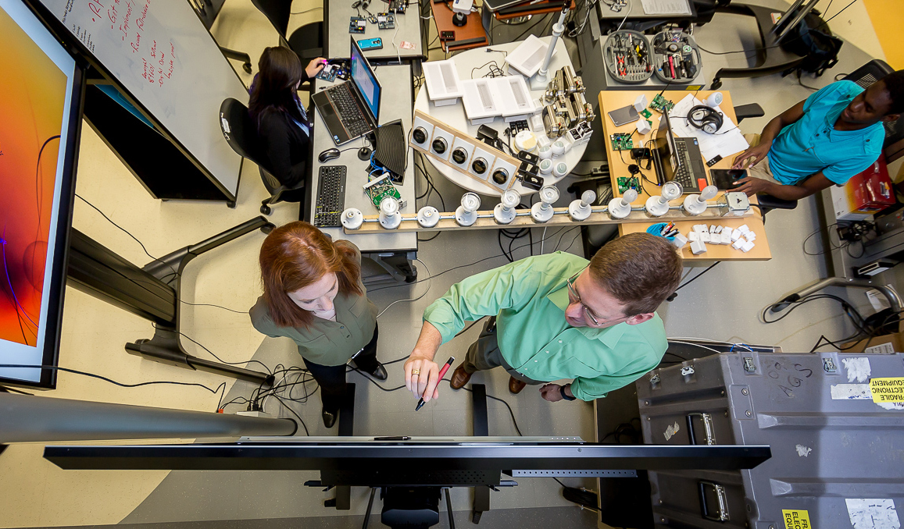

Unique Identification of Internet of Things Devices Challenge
This challenge was a lot of what I did the summer of 2016. It was done as part of a team of 4 interns at MITRE. Our goal was to create a challenge that would inspire its contestants to find a new way of uniquely identifying devices, specifically devices using IoT protocols.

When I started the project, I knew very little. I knew that IoT stood of Internet of Things, and that it was essentially when you took normal things and hooked them up to the internet of get data off them, or control them from your phone. I had kind of assumed that meant every one of them could connect to a router. This summer I learned otherwise. I studied Z-Wave and ZigBee, two of the major protocols used today, set up networks, sniffed the packets going over them, and then tried to ensure that candidates wouldn't really be able to be sure that any given device is the same device that it was yesterday. It was a challenging problem and a lot of fun. I can't wait to see who solves the challenge when it goes live at the end of October, and how long it takes them.
If you want to know more about this challenge, click here to visit the challenge website.